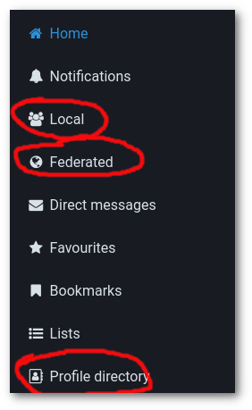

Mastodon: Timeline beleben
| Anke (encarsia)
Ich stelle aktuell wieder einen kleinen Zulauf bei Mastodon fest. Eine häufig gestellte Frage ist, wie man interessante Leute findet, denen man folgen möchte.
Timelines
- Local
-
Als Neuling startet man gewöhnlich mit der Registrierung bei einer bestehenden Instanz, das heißt, die lokale Timeline der Instanz ist einen regelmäßigen Besuch Wert.
- Federated
-
Die instanzübergreifende Timeline kann je nach Instanzsetup, Tageszeit und Interesse mehr oder weniger ergiebig sein, häufig sieht man die Tröts vor lauter Spam nicht, trotzdem sollte man hier zumindest mal reinschauen.
Profilverzeichnis
Hinter dem Profile directory versteckt sich eine ganz nützliche Übersicht von aktiven Nutzern der eigenen und anderer Instanzen. Hier sieht man auch, wie nützlich es für andere ist, eine Kurzbio und ein Profilbild einzupflegen. Diese Übersicht muss nicht in jeder Instanz aktiv sein.
Bemerkung
Möchte man nicht im Profilverzeichnis gelistet werden, kann man dies in den Einstellungen unter Profile -> Appearance -> List this account on the directory deaktivieren.
Hashtags
Die Suchfunktion lässt immer noch zu wünschen übrig und so ist die Suche nach Hashtags am zielführendsten.
Entweder sucht man direkt in der Suchleiste in der linken Spalte (siehe auch den dort erscheinenden Tooltipp) oder ruft die URL <instance>/tags/<tag> auf.
Verwendet man das advanced web interface, also die Mehrspaltenansicht, kann man die Stichworte als eigene Spalte anheften.
Leute
Mit ein wenig Klicken und Scrollen in den Timelines findet man schnell das ein oder andere Profil, bei dem man genauer hinschaut. Falls man gar nicht weiß, wo man anfangen soll, folgt man zunächst seinem eigenen Instanzbetreiber (zu finden auf der About-Seite).
Neben den Posts sind folgende Punkte interessant:
Wird das Profil aktuell verwendet? Mastodon hat immer mal wieder kleine Hypes erlebt, es gibt viele verwaiste Profile.
Wem folgt diese Person?
Wer folgt dieser Person?
Welche Interessen hat die Person (Kurzbio, Featured hashtags)?
Gibt es interessante Profile im Profilverzeichnis dieser Instanz (obere Leiste auf jeder Profilseite)?
Bots
Menschen sind ja auch nicht alles. Da das ganze Fediversum auf freier Technologie basiert und auch Mastodon einfach per API zugänglich ist, sind automatisierte Posts nicht weit. Dafür gibt es mit botsin.space eine eigene Instanz.
Bei den überwiegend sehr ernsthaften Beiträgen auf Mastodon können Botbeiträge durchaus stimmungsaufhellend wirken.
Aktiv werden
Bei Mastodon wird man ohne Zutun nicht so einfach bespaßt, man muss sich selbst um seine Unterhaltung kümmern. Dazu muss und kann man auf verschiedene Arten aktiv werden:
fav, was dir gefällt
booste, was dir besonders gefällt
kommentiere, und sei es ein schlagfertiger Spruch oder einfach ein Danke, egal - was soll passieren?
vervollständige dein Profil, in der Reihenfolge Avatar, Kurzbio, Links, Featured hashtags, pinne einen oder wenige für dich relevante Tröts an
verfasse einen
#introduction-Tröt (auf Deutsch auch die Hashtags#vorstellungund#neuhierverwenden) und stell dich der Gemeinde vortröte selbst, auch wenn man zunächst gefühlt ins Unbekannte sendet
Persönliche Tipps
- Poste selbst
-
Profile, die nur oder überwiegend aus Boosts bestehen, finde ich uninteressant, dann folge ich lieber dem Original.
- Alltägliches
-
Schreib auch mal was von dir, was Lustiges, Profanes, Alltägliches, wie wäre es mit einem Foto von draußen? Schreib lieber deine eigenen Showerthoughts auf als der Zehnte zu sein, der irgendeinen aktuellen Aufreger per Screenshot verbreitet.
- Mastodon-Interessen-Bingo
-
Du arbeitest in Tech, interessierst dich für FLOSS, Datenschutz, bist politisch total engagiert, gegen ganz viel und empörst dich gern? Ist ja gut und schön, aber hier auch nicht sehr originell (ja okay, Mastodons sind Herdentiere), was macht dich sonst noch aus? Hast du auch andere Hobbies (Steine sammeln, (Nischen-)Sport, Handwerken/Basteln, Schnulzen gucken, whatever)? Erzähl mal!
- CW
-
Ich möchte das Fass Content Warning hier nicht aufmachen, nur eins: es muss nicht jeder Inhalt hinter einer CW versteckt werden. Im Gegenteil, ich komme mir verarscht vor und halte es auch für den Umgang auf der Plattform hier für kontraproduktiv, diese Funktion im Übermaß zu nutzen.
Click
folge FediTips (en) für mehr Feditips
Kommentare
Comments powered by Disqus